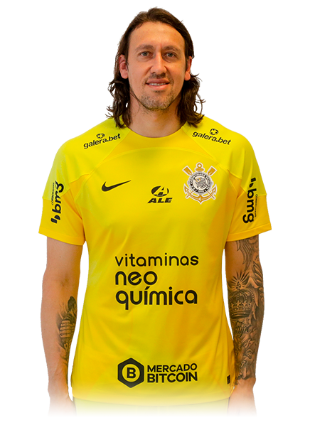

BIOGRAFIA
Cássio Roberto Ramos, conhecido como Cássio, nasceu em Veranópolis - RS, em 6 de junho de
1987 (35 anos).
Cássio é um futebolista brasileiro que atua como
goleiro. Atualmente joga no Corinthians.
CARREIRA
Grêmio
Cássio começou a carreira como profissional no Grêmio, após ser descoberto na cidade de Veranópolis. Fez a sua estreia no dia 12 de fevereiro de 2006, contra o Santa Cruz-RS pelo Campeonato Gaúcho. A sua partida mais importante foi contra o Fluminense, no dia 26 de outubro de 2006. Permaneceu no clube até 2007.
PSV
Em 25 de julho de 2007, na época com apenas 20 anos e seus 1,95 de altura, assinou um contrato de cinco anos com o PSV Eindhoven, da Holanda, por 1,5 milhões de euros (mais de R$ 4 milhões na época).
Na metade dessa temporada foi cedido por empréstimo para o Sparta Rotterdam, onde foi titular por quatorze jogos, antes de voltar ao PSV. Não participou da temporada 2009–10 como titular, mas jogou três partidas na temporada seguinte, defendendo a meta do PSV. Em setembro de 2011, assinou a rescisão amigável do seu contrato com o PSV.
Corinthians
No dia 9 de dezembro de 2011, após encerrar seu vínculo com o PSV Eindhoven, Cássio acertou contrato com o Corinthians até o final de 2015.
Fez a sua estreia com a camisa do Corinthians no dia 28 de março, em uma vitória por 1-0 contra o XV de Piracicaba, no Pacaembu, pelo Campeonato Paulista em 2012.
Nesse ano, Cássio foi um dos protagonistas pela conquista da Libertadores da América e do Mundial de Clubes da FIFA. Cássio foi eleito o melhor jogador da Libertadores e ganhou a Bola de Ouro de melhor jogador da final do Mundial e da competição.
De 2012 até os dias de hoje (2022), Cássio se tornou um maiores ídolos do Timão e ganhou outros títulos Nacionais e Internacionais.
Seleção Brasileira
Cássio vestiu as camisas da seleção Brasileira sub-20 e no time Principal. Quando ele ainda estava no sub-20, foi campeão Sul-Americano em 2007 e, no mesmo ano, participou da Copa do Mundo.
Em 21 de março de 2007, recebeu a sua primeira convocação para a Seleção principal, até então comandada pelo técnico Dunga. Nos anos seguintes, o goleiro foi convocado para a Copa do Mundo da FIFA de 2018 e para a Copa América de 2019, sendo campeão do torneio sul-americano.
TÍTULOS
- Campeonato Gaúcho: 2006
- Eredivisie: 2007-08
- Supercopa dos países baixos: 2008
- Copa Libertadores da América: 2012
- Mundial de Clubes da FIFA: 2012
- Recopa Sul-Americana: 2013
- Campeonato Paulista: 2013, 2015, 2017, 2018 e 2019
- Campeonato Brasileiro: 2015, 2017
- Campeonato Sul-Americano de Futebol Sub-20: 2007
- Superclássico das Américas: 2012
- Copa América: 2019